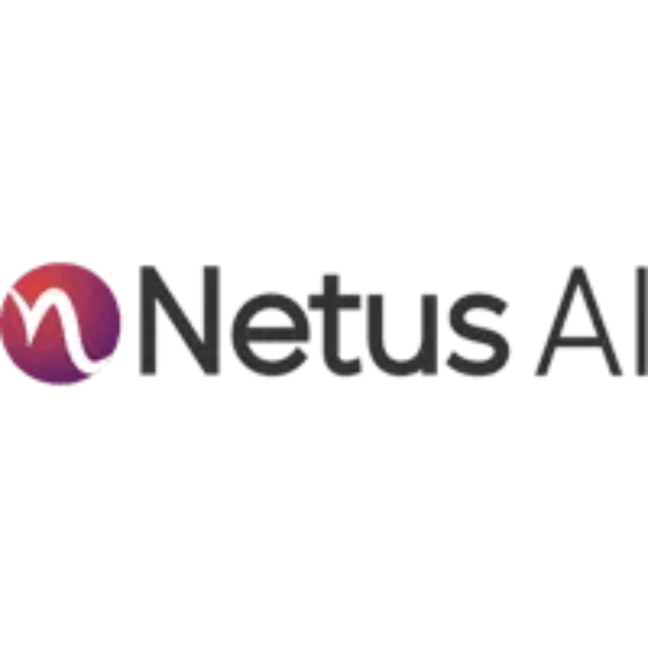

Plagiarism Changer
Ai Detector Fixer
Conch Ai
Bypass Winston Ai
Smodin Ai Detection Remover
Sentence Rewritter
Get Rid Of Ai Detection
Convert Ai To Human
Plagiarism Changer
Ai Detector Fixer
Conch Ai
Bypass Winston Ai
Smodin Ai Detection Remover
Sentence Rewritter
Get Rid Of Ai Detection
Convert Ai To Human
This site was created with the
Nicepage